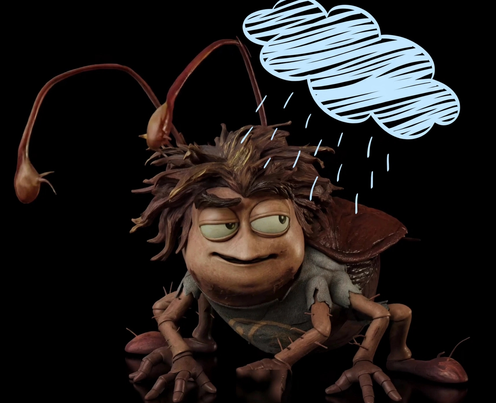

Cucarachín

En una cocina muy acogedora, detrás del refrigerador, vivía una familia de cucarachas muy unida. Estaba la mamá cucaracha, siempre atenta y cariñosa, y su hijito Cucarachín, un pequeño travieso con antenitas paradas y mucha energía. Cucarachín era bueno y juguetón, pero tenía un gran defecto: no le gustaba recoger sus juguetes. Cada vez que jugaba, dejaba sus canicas, sus carritos de miga de pan y sus pelotas de migaja tirados por todo el rincón. —Cucarachín, guarda tus juguetes, por favor —le decía su mamá con paciencia. —¡Ay, mamá, después! —respondía él, corriendo a jugar otra cosa. La mamá suspiraba y recogía ella misma los juguetes, mientras Cucarachín seguía jugando sin prestar atención. Y así pasaban los días: Cucarachín desobedecía, dejaba todo regado y su mamá lo arreglaba todo. Una mañana, la mamá cucaracha tenía que salir a buscar comida para la familia. Antes de irse, le dijo a Cucarachín: —Hijito, hoy hay una fiesta de migajas en la despensa. Voy a salir un rato. Te encargo que recojas tus juguetes y no dejes nada tirado. Por favor, obedece. —¡Sí, mamá, sí! —dijo Cucarachín, pero en cuanto su mamá se fue, pensó—: "Recoger mis juguetes es aburrido. Mejor voy a jugar con mis amigos." Y salió corriendo a jugar, dejando sus canicas, sus carritos y sus pelotas regados por todo el rincón, justo en medio del camino. Mientras Cucarachín jugaba feliz con sus amigos, su mamá regresó más temprano de lo esperado. Cargaba una gran migaja de pan para la cena. Al entrar al rincón, ¡paf! — pisó una canica de Cucarachín y resbaló. La migaja de pan salió volando, y la mamá cucaracha cayó al suelo con un golpe. —¡Ay! —gritó ella, adolorida. Cucarachín escuchó el grito y corrió asustado. —¡Mamá! ¿Qué pasó? —preguntó, con el corazón latiendo fuerte. —Me resbalé con tu canica, muchachito —dijo su mamá, frotándose la patita—. Si hubieras recogido tus juguetes como te pedí, esto no habría pasado. Cucarachín miró los juguetes regados, miró a su mamá adolorida y sintió una gran tristeza. Se dio cuenta de que su desobediencia no solo le había hecho daño a él, sino a la persona que más quería. Cucarachín se agachó, con lágrimas en los ojos, y comenzó a recoger sus juguetes uno por uno. Guardó las canicas en su cajita, los carritos en su lugar y las pelotas en su rincón. Cuando terminó, abrazó a su mamá. —Lo siento mucho, mamá —dijo con sinceridad—. Tenías razón. No volveré a dejar mis juguetes tirados. Prometo ser obediente y responsable. Su mamá lo abrazó con cariño y le dijo: —Eso es lo que más me alegra, Cucarachín. No importa que te equivoques, sino que aprendas de tus errores. La responsabilidad es un gran valor, y cuando la practicas, ayudas a los demás y te ayudas a ti mismo. Desde ese día, Cucarachín cambió. Siempre recogía sus juguetes después de jugar, y hasta ayudaba a su mamá a mantener la casa limpia. Se volvió un ejemplo de responsabilidad y obediencia para todos los insectos del vecindario. Y colorín colorado, este cuento de Cucarachín ha terminado, con una enseñanza que nunca olvidó: obedecer a mamá y ser responsable trae mucha felicidad. 💕

Historia de tu tia Sol
Volver al inicio